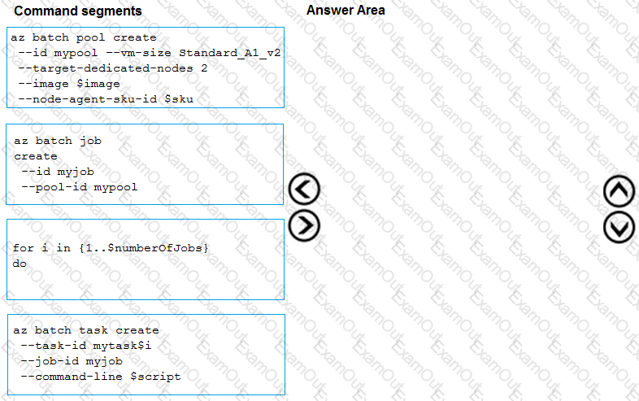
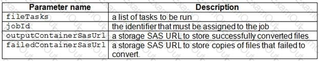

Microsoft - AZ-204
Box 1: Enterprise Integration Pack
After you create an integration account that has partners and agreements, you are ready to create a business to
business (B2B) workflow for your logic app with the Enterprise Integration Pack.
Box 2: Code View Editor
To work with logic app definitions in JSON, open the Code View editor when working in the Azure portal or
in Visual Studio, or copy the definition into any editor that you want.
Box 3: Logical Apps Designer
You can build your logic apps visually with the Logic Apps Designer, which is available in the Azure portal
through your browser and in Visual Studio.
References:
https://docs.microsoft.com/en-us/azure/logic-apps/logic-apps-enterprise-integration-b2b
https://docs.microsoft.com/en-us/azure/logic-apps/logic-apps-author-definitions
https://docs.microsoft.com/en-us/azure/logic-apps/logic-apps-overview
Question #:56 - (Exam Topic 3)
You are implementing a software as a service (SaaS) ASP.NET Core web service that will run as an Azure
Web App. The web service will use an on-premises SQL Server database for storage. The web service also
includes a WebJob that processes data updates. Four customers will use the web service.
•Each instance of the WebJob processes data for a single customer and must run as a singleton instance.
•Each deployment must be tested by using deployment slots prior to serving production data.
•Azure costs must be minimized.
•Azure resources must be located in an isolated network.
138 of 272


Microsoft - AZ-204
You need to configure the App Service plan for the Web App.
How should you configure the App Service plan? To answer, select the appropriate settings in the answer area.
NOTE: Each correct selection is worth one point.
Answer:
Explanation
139 of 272


Microsoft - AZ-204
Number of VM instances: 4
You are not charged extra for deployment slots.
Pricing tier: Isolated
The App Service Environment (ASE) is a powerful feature offering of the Azure App Service that gives
network isolation and improved scale capabilities. It is essentially a deployment of the Azure App Service into
a subnet of a customer’s Azure Virtual Network (VNet).
References:
https://azure.microsoft.com/sv-se/blog/announcing-app-service-isolated-more-power-scale-and-ease-of-use/
Question #:57 - (Exam Topic 3)
You are preparing to deploy a medical records application to an Azure virtual machine (VM). The application
will be deployed by using a VHD produced by an on-premises build server.
You need to ensure that both the application and related data are encrypted during and after deployment to
Azure.
Which three actions should you perform in sequence? To answer, move the appropriate actions from the list of
actions to the answer area and arrange them in the correct order.
140 of 272

Microsoft - AZ-204
Answer:
Explanation
141 of 272

Microsoft - AZ-204
Step 1: Encrypt the on-premises VHD by using BitLocker without a TPM. Upload the VM to Azure Storage
Step 2: Run the Azure PowerShell command Set-AzureRMVMOSDisk
To use an existing disk instead of creating a new disk you can use the Set-AzureRMVMOSDisk command.
Example:
$osDiskName = $vmname+'_osDisk'
$osDiskCaching = 'ReadWrite'
$osDiskVhdUri = "https://$stoname.blob.core.windows.net/vhds/"+$vmname+"_os.vhd"
$vm = Set-AzureRmVMOSDisk -VM $vm -VhdUri $osDiskVhdUri -name $osDiskName -Create
Step 3: Run the Azure PowerShell command Set-AzureRmVMDiskEncryptionExtension
Use the Set-AzVMDiskEncryptionExtension cmdlet to enable encryption on a running IaaS virtual machine in
Azure.
Incorrect:
Not TPM: BitLocker can work with or without a TPM. A TPM is a tamper resistant security chip on the
system board that will hold the keys for encryption and check the integrity of the boot sequence and allows the
most secure BitLocker implementation. A VM does not have a TPM.
References:
https://www.itprotoday.com/iaaspaas/use-existing-vhd-azurerm-vm
Question #:58 - (Exam Topic 3)
You are a developer for a software as a service (SaaS) company that uses an Azure Function to process orders.
The Azure Function currently runs on an Azure Function app that is triggered by an Azure Storage queue.
You are preparing to migrate the Azure Function to Kubernetes using Kubernetes-based Event Driven
142 of 272


Microsoft - AZ-204
Autoscaling (KEDA).
You need to configure Kubernetes Custom Resource Definitions (CRD) for the Azure Function.
Which CRDs should you configure? To answer, drag the appropriate CRD types to the correct locations. Each
CRD type may be used once, more than once, or not at all. You may need to drag the split bar between panes
or scroll to view content.
NOTE: Each correct selection is worth one point.
Answer:
Explanation
143 of 272


Microsoft - AZ-204
Box 1: Deployment
To deploy Azure Functions to Kubernetes use the func kubernetes deploy command has several attributes that
directly control how our app scales, once it is deployed to Kubernetes.
Box 2: ScaledObject
With --polling-interval, we can control the interval used by KEDA to check Azure Service Bus Queue for
messages.
Example of ScaledObject with polling interval
apiVersion: keda.k8s.io/v1alpha1
kind: ScaledObject
metadata:
name: transformer-fn
namespace: tt
labels:
deploymentName: transformer-fn
spec:
scaleTargetRef:
deploymentName: transformer-fn
pollingInterval: 5
minReplicaCount: 0
144 of 272

Microsoft - AZ-204
maxReplicaCount: 100
Box 3: Secret
Store connection strings in Kubernetes Secrets.
Example: to create the Secret in our demo Namespace:
# create the k8s demo namespace
kubectl create namespace tt
# grab connection string from Azure Service Bus
KEDA_SCALER_CONNECTION_STRING=$(az servicebus queue authorization-rule keys list \
-g $RG_NAME \
--namespace-name $SBN_NAME \
--queue-name inbound \
-n keda-scaler \
--query "primaryConnectionString" \
-o tsv)
# create the kubernetes secret
kubectl create secret generic tt-keda-auth \
--from-literal KedaScaler=$KEDA_SCALER_CONNECTION_STRING \
--namespace tt
Reference:
https://www.thinktecture.com/en/kubernetes/serverless-workloads-with-keda/
Question #:59 - (Exam Topic 3)
Note: This question is part of a series of questions that present the same scenario. Each question in the series
contains a unique solution that might meet the stated goals. Some question sets might have more than one
correct solution, while others might not have a correct solution.
After you answer a question in this section, you will NOT be able to return to it. As a result, these questions
will not appear in the review screen.
You develop a software as a service (SaaS) offering to manage photographs. Users upload photos to a web
145 of 272

Microsoft - AZ-204
service which then stores the photos in Azure Storage Blob storage. The storage account type is
General-purpose V2.
When photos are uploaded, they must be processed to produce and save a mobile-friendly version of the
image. The process to produce a mobile-friendly version of the image must start in less than one minute.
You need to design the process that starts the photo processing.
Solution: Convert the Azure Storage account to a BlockBlobStorage storage account.
Does the solution meet the goal?
A. Yes
B. No
Answer: B
Explanation
Not necessary to convert the account, instead move photo processing to an Azure Function triggered from the
blob upload..
Azure Storage events allow applications to react to events. Common Blob storage event scenarios include
image or video processing, search indexing, or any file-oriented workflow.
Note: Only storage accounts of kind StorageV2 (general purpose v2) and BlobStorage support event
integration. Storage (general purpose v1) does not support integration with Event Grid.
Reference:
https://docs.microsoft.com/en-us/azure/storage/blobs/storage-blob-event-overview
Question #:60 - (Exam Topic 3)
Note: This question is part of a series of questions that present the same scenario. Each question in the series
contains a unique solution that might meet the stated goals. Some question sets might have more than one
correct solution, while others might not have a correct solution.
After you answer a question in this question, you will NOT be able to return to it. As a result, these questions
will not appear in the review screen.
Margie’s Travel is an international travel and bookings management service. The company is expanding into
restaurant bookings. You are tasked with implementing Azure Search for the restaurants listed in their
solution.
You create the index in Azure Search.
You need to import the restaurant data into the Azure Search service by using the Azure Search .NET SDK.
146 of 272

Microsoft - AZ-204
Solution:
1. Create a SearchIndexClient object to connect to the search index.
2. Create a DataContainer that contains the documents which must be added.
3. Create a DataSource instance and set its Container property to the DataContainer.
4. Call the Documents.Suggest method of the SearchIndexClient and pass the DataSource.
Does the solution meet the goal?
A. Yes
B. No
Answer: B
Explanation
Use the following method:
1. - Create a SearchIndexClient object to connect to the search index
2. - Create an IndexBatch that contains the documents which must be added.
3. - Call the Documents.Index method of the SearchIndexClient and pass the IndexBatch.
References:
https://docs.microsoft.com/en-us/azure/search/search-howto-dotnet-sdk
Question #:61 - (Exam Topic 3)
You must implement Application Insights instrumentation capabilities utilizing the Azure Mobile Apps SDK
to provide meaningful analysis of user interactions with a mobile app.
You need to capture the data required to implement the Usage Analytics feature of Application Insights.
Which three data values should you capture? Each correct answer presents part of the solution
NOTE: Each correct selection is worth one point.
A. Trace
B. Session Id
C. Exception
D. User Id
E.
147 of 272


Microsoft - AZ-204
E. Events
Answer: A D E
Explanation
Application Insights is a service for monitoring the performance and usage of your apps. This module allows
you to send telemetry of various kinds (events, traces, etc.) to the Application Insights service where your data
can be visualized in the Azure Portal.
Application Insights manages the ID of a session for you.
References:
https://github.com/microsoft/ApplicationInsights-Android
Question #:62 - (Exam Topic 3)
Your company is developing an Azure API.
You need to implement authentication for the Azure API. You have the following requirements:
All API calls must be secure.
Callers to the API must not send credentials to the API.
Which authentication mechanism should you use?
A. Basic
B. Anonymous
C. Managed identity
D. Client certificate
Answer: C
Explanation
Use the authentication-managed-identity policy to authenticate with a backend service using the managed
identity of the API Management service. This policy essentially uses the managed identity to obtain an access
token from Azure Active Directory for accessing the specified resource. After successfully obtaining the
token, the policy will set the value of the token in the Authorization header using the Bearer scheme.
Reference:
https://docs.microsoft.com/bs-cyrl-ba/azure/api-management/api-management-authentication-policies
148 of 272

Microsoft - AZ-204
Question #:63 - (Exam Topic 3)
You are creating a CLI script that creates an Azure web app related services in Azure App Service. The web
app uses the following variables:
You need to automatically deploy code from GitHub to the newly created web app.
How should you complete the script? To answer, select the appropriate options in the answer area.
NOTE: Each correct selection is worth one point.
Answer:
149 of 272

Microsoft - AZ-204
Explanation
150 of 272

Microsoft - AZ-204
Box 1: az appservice plan create
The azure group creates command successfully returns JSON result. Now we can use resource group to create
a azure app service plan
Box 2: az webapp create
Create a new web app..
Box 3: --plan $webappname
with the serviceplan we created in step 1.
Box 4: az webapp deployment
Continuous Delivery with GitHub. Example:
az webapp deployment source config --name firstsamplewebsite1 --resource-group websites--repo-url $gitrepo
151 of 272

Microsoft - AZ-204
--branch master --git-token $token
Box 5: --repo-url $gitrepo --branch master --manual-integration
Reference:
https://medium.com/@satish1v/devops-your-way-to-azure-web-apps-with-azure-cli-206ed4b3e9b1
Question #:64 - (Exam Topic 3)
You plan to deploy a new application to a Linux virtual machine (VM) that is hosted in Azure.
The entire VM must be secured at rest by using industry-standard encryption technology to address
organizational security and compliance requirements.
You need to configure Azure Disk Encryption for the VM.
How should you complete the Azure Cli commands? To answer, select the appropriate options in the answer
area.
NOTE: Each correct selection is worth one point.
Answer:
152 of 272

Microsoft - AZ-204
Explanation
153 of 272

Microsoft - AZ-204
154 of 272

Microsoft - AZ-204
Box 1: keyvault
Create an Azure Key Vault with az keyvault create and enable the Key Vault for use with disk encryption.
Specify a unique Key Vault name for keyvault_name as follows:
keyvault_name=myvaultname$RANDOM
az keyvault create \
--name $keyvault_name \
--resource-group $resourcegroup \
--location eastus \
--enabled-for-disk-encryption True
Box 2: keyvault key
155 of 272

Microsoft - AZ-204
The Azure platform needs to be granted access to request the cryptographic keys when the VM boots to
decrypt the virtual disks. Create a cryptographic key in your Key Vault with az keyvault key create. The
following example creates a key named myKey:
az keyvault key create \
--vault-name $keyvault_name \
--name myKey \
--protection software
Box 3: vm
Create a VM with az vm create. Only certain marketplace images support disk encryption. The following
example creates a VM named myVM using an Ubuntu 16.04 LTS image:
az vm create \
--resource-group $resourcegroup \
--name myVM \
--image Canonical:UbuntuServer:16.04-LTS:latest \
--admin-username azureuser \
--generate-ssh-keys \
Box 4: vm encryption
Encrypt your VM with az vm encryption enable:
az vm encryption enable \
--resource-group $resourcegroup \
--name myVM \
--disk-encryption-keyvault $keyvault_name \
--key-encryption-key myKey \
--volume-type all
Note: seems to an error in the question. Should have enable instead of create.
Box 5: all
Encrypt both data and operating system.
156 of 272

Microsoft - AZ-204
References:
https://docs.microsoft.com/bs-latn-ba/azure/virtual-machines/linux/encrypt-disks
Question #:65 - (Exam Topic 3)
You are developing an application that uses Azure Storage Queues.
You have the following code:
For each of the following statements, select Yes if the statement is true. Otherwise, select No.
NOTE: Each correct selection is worth one point.
Answer:
157 of 272


Microsoft - AZ-204
Explanation
Box 1: No
The QueueDescription.LockDuration property gets or sets the duration of a peek lock; that is, the amount of
time that the message is locked for other receivers. The maximum value for LockDuration is 5 minutes; the
default value is 1 minute.
Box 2: Yes
You can peek at the message in the front of a queue without removing it from the queue by calling the
PeekMessage method.
Box 3: Yes
Reference:
158 of 272

Microsoft - AZ-204
https://docs.microsoft.com/en-us/azure/storage/queues/storage-dotnet-how-to-use-queues
https://docs.microsoft.com/en-us/dotnet/api/microsoft.servicebus.messaging.queuedescription.lockduration
Question #:66 - (Exam Topic 3)
Note: This question is part of a series of questions that present the same scenario. Each question in the scries
contains a unique solution that might meet the stated goals. Some question sets might have more than one
correct solution, while others might not have a correct solution.
After you answer a question in this section, you will NOT be able to return to it. As a result these questions
will not appear in the review screen.
Margie’s Travel is an international travel and bookings management service. The company is expanding into
restaurant bookings. You are tasked with implementing Azure Search for the restaurants listed in their
solution.
You create the index in Azure Search.
You need to import the restaurant data into the Azure Search service by using the Azure Search .NET SDK.
Solution:
1. Create a SearchlndexClient object to connect to the search index.
2. Create a DataContainer that contains the documents which must be added.
3. Create a DataSource instance and set its Container property to the DataContamer
4 Call the Documents.Suggest method of the SearchlndexClient and pass the DataSource.
Does the solution meet the goal?
A. Yes
B. No
Answer: B
Question #:67 - (Exam Topic 3)
Note: This question is part of a series of questions that present the same scenario. Each question in the
series contains a unique solution that might meet the stated goals. Some question sets might have more
than one correct solution, while others might not have a correct solution.
After you answer a question in this section, you will NOT be able to return to it. As a result, these
questions will not appear in the review screen.
159 of 272


Microsoft - AZ-204
You develop Azure solutions.
You must grant a virtual machine (VM) access to specific resource groups in Azure Resource Manager.
You need to obtain an Azure Resource Manager access token.
Solution: Run the Invoke-RestMethod cmdlet to make a request to the local managed identity for Azure
resources endpoint.
Does the solution meet the goal?
A. Yes
B. No
Answer: A
Explanation
Get an access token using the VM's system-assigned managed identity and use it to call Azure Resource
Manager
You will need to use PowerShell in this portion.
In the portal, navigate to Virtual Machines and go to your Windows virtual machine and in the
Overview, click Connect.
Enter in your Username and Password for which you added when you created the Windows VM.
Now that you have created a Remote Desktop Connection with the virtual machine, open PowerShell in
the remote session.
Using the Invoke-WebRequest cmdlet, make a request to the local managed identity for Azure resources
endpoint to get an access token for Azure Resource Manager.
Example:
$response = Invoke-WebRequest -Uri '
http://169.254.169.254/metadata/identity/oauth2/token?api-version=2018-02-01
&resource=https://management.azure.com/' -Method GET -Headers @{Metadata="true"}
Reference:
https://docs.microsoft.com/en-us/azure/active-directory/managed-identities-azure-resources/tutorial-windows-vm-access-arm
Question #:68 - (Exam Topic 3)
You have a web service that is used to pay for food deliveries. The web service uses Azure Cosmos DB as the
data store.
160 of 272

Microsoft - AZ-204
You plan to add a new feature that allows users to set a tip amount. The new feature requires that a property
named tip on the document in Cosmos DB must be present and contain a numeric value.
There are many existing websites and mobile apps that use the web service that will not be updated to set the
tip property for some time.
How should you complete the trigger?
NOTE: Each correct selection is worth one point.
Answer:
161 of 272

Microsoft - AZ-204
Explanation
162 of 272

Microsoft - AZ-204
Box 1: getContext().getRequest();
Box 2: if(isNaN(i)["tip"] ..
In JavaScript, there are two ways to check if a variable is a number :
isNaN() – Stands for “is Not a Number”, if variable is not a number, it return true, else return false.
typeof – If variable is a number, it will returns a string named “number”.
Box 3:r.setBody(i);
// update the item that will be created
References:
https://docs.microsoft.com/bs-latn-ba/azure/cosmos-db/how-to-write-stored-procedures-triggers-udfs
163 of 272

Microsoft - AZ-204
https://mkyong.com/javascript/check-if-variable-is-a-number-in-javascript/
Question #:69 - (Exam Topic 3)
You develop and deploy a Java RESTful API to Azure App Service.
You open a browser and navigate to the URL for the API. You receive the following error message:
You need to resolve the error.
What should you do?
A. Bind an SSL certificate
B. Enable authentication
C. Enable CORS
D. Map a custom domain
E. Add a CDN
Answer: C
Explanation
We need to enable Cross-Origin Resource Sharing (CORS).
References:
https://medium.com/@xinganwang/a-practical-guide-to-cors-51e8fd329a1f
Question #:70 - (Exam Topic 3)
You are creating a script that will run a large workload on an Azure Batch pool. Resources will be reused and
do not need to be cleaned up after use.
You have the following parameters:
You need to write an Azure CLI script that will create the jobs, tasks, and the pool.
In which order should you arrange the commands to develop the solution? To answer, move the appropriate
commands from the list of command segments to the answer area and arrange them in the correct order.
164 of 272


Microsoft - AZ-204
Answer:
165 of 272

Microsoft - AZ-204
Explanation
166 of 272

Microsoft - AZ-204
Step 1: az batch pool create
# Create a new Linux pool with a virtual machine configuration.
az batch pool create \
--id mypool \
--vm-size Standard_A1 \
--target-dedicated 2 \
--image canonical:ubuntuserver:16.04-LTS \
--node-agent-sku-id "batch.node.ubuntu 16.04"
Step 2: az batch job create
# Create a new job to encapsulate the tasks that are added.
az batch job create \
--id myjob \
--pool-id mypool
167 of 272

Microsoft - AZ-204
Step 3: az batch task create
# Add tasks to the job. Here the task is a basic shell command.
az batch task create \
--job-id myjob \
--task-id task1 \
--command-line "/bin/bash -c 'printenv AZ_BATCH_TASK_WORKING_DIR'"
Step 4: for i in {1..$numberOfJobs} do
References:
https://docs.microsoft.com/bs-latn-ba/azure/batch/scripts/batch-cli-sample-run-job
Question #:71 - (Exam Topic 3)
Fourth Coffee has an ASP.NET Core web app that runs in Docker. The app is mapped to the
www.fourthcoffee.com domain.
Fourth Coffee is migrating this application to Azure.
You need to provision an App Service Web App to host this docker image and map the custom domain to the
App Service web app.
A resource group named FourthCoffeePublicWebResourceGroup has been created in the WestUS region that
contains an App Service Plan named AppServiceLinuxDockerPlan.
Which order should the CLI commands be used to develop the solution? To answer, move all of the Azure
CLI command from the list of commands to the answer area and arrange them in the correct order.
168 of 272

Microsoft - AZ-204
Answer:
169 of 272

Microsoft - AZ-204
Explanation
170 of 272

Microsoft - AZ-204
Step 1: #bin/bash
The appName is used when the webapp-name is created in step 2.
Step 2: az webapp config hostname add
The webapp-name is used when the webapp is created in step 3.
Step 3: az webapp create
Create a web app. In the Cloud Shell, create a web app in the myAppServicePlan App Service plan with the az
webapp create command.
Step : az webapp confing container set
In Create a web app, you specified an image on Docker Hub in the az webapp create command. This is good
enough for a public image. To use a private image, you need to configure your Docker account ID and
password in your Azure web app.
In the Cloud Shell, follow the az webapp create command with az webapp config container set.
171 of 272

Microsoft - AZ-204
References:
https://docs.microsoft.com/en-us/azure/app-service/containers/tutorial-custom-docker-image
Question #:72 - (Exam Topic 3)
You are preparing to deploy an ASP.NET Core website to an Azure Web App from a GitHub repository. The
website includes static content generated by a script.
You plan to use the Azure Web App continuous deployment feature.
You need to run the static generation script before the website starts serving traffic.
What are two possible ways to achieve this goal? Each correct answer presents a complete solution.
NOTE: Each correct selection is worth one point.
A. Create a file named .deployment in the root of the repository that calls a script which generates the static
content and deploys the website.
B. Add a PreBuild target in the websites csproj project file that runs the static content generation script.
C. Create a file named run.cmd in the folder /run that calls a script which generates the static content and
deploys the website.
D. Add the path to the static content generation tool to WEBSITE_RUN_FROM_PACKAGE setting in the
host.json file.
Answer: A D
Explanation
A: To customize your deployment, include a .deployment file in the repository root.
You just need to add a file to the root of your repository with the name .deployment and the content:
[config]
command = YOUR COMMAND TO RUN FOR DEPLOYMENT
this command can be just running a script (batch file) that has all that is required for your deployment, like
copying files from the repository to the web root directory for example.
D: In Azure, you can run your functions directly from a deployment package file in your function app. The
other option is to deploy your files in the d:\home\site\wwwroot directory of your function app (see A above).
To enable your function app to run from a package, you just add a WEBSITE_RUN_FROM_PACKAGE
setting to your function app settings.
172 of 272

Microsoft - AZ-204
Note: The host.json metadata file contains global configuration options that affect all functions for a function
app.
References:
https://github.com/projectkudu/kudu/wiki/Custom-Deployment-Script
https://docs.microsoft.com/bs-latn-ba/azure/azure-functions/run-functions-from-deployment-package
Question #:73 - (Exam Topic 3)
You are developing an application to use Azure Blob storage. You have configured Azure Blob storage to
include change feeds.
A copy of your storage account must be created in another region. Data must be copied from the current
storage account to the new storage account directly between the storage servers.
You need to create a copy of the storage account in another region and copy the data.
In which order should you perform the actions? To answer, move all actions from the list of actions to the
answer area and arrange them in the correct order.
Answer:
173 of 272


Microsoft - AZ-204
Explanation
To move a storage account, create a copy of your storage account in another region. Then, move your data to
that account by using AzCopy, or another tool of your choice.
The steps are:
Export a template.
174 of 272


Microsoft - AZ-204
Modify the template by adding the target region and storage account name.
Deploy the template to create the new storage account.
Configure the new storage account.
Move data to the new storage account.
Delete the resources in the source region.
Note: You must enable the change feed on your storage account to begin capturing and recording changes.
You can enable and disable changes by using Azure Resource Manager templates on Portal or Powershell.
Reference:
https://docs.microsoft.com/en-us/azure/storage/common/storage-account-move
https://docs.microsoft.com/en-us/azure/storage/blobs/storage-blob-change-feed
Question #:74 - (Exam Topic 3)
You develop a gateway solution for a public facing news API. The news API back end is implemented as a
RESTful service and uses an OpenAPI specification.
You need to ensure that you can access the news API by using an Azure API Management service instance.
Which Azure PowerShell command should you run?
A. Import-AzureRmApiManagementApi –Context $ApiMgmtContext –SpecificationFormat
"Swagger" -SpecificationPath $SwaggerPath –Path $Path
B. New-AzureRmApiManagementBackend -Context $ApiMgmtContext -Url $Url -Protocol
http
C. New-AzureRmApiManagement –ResourceGroupName $ResourceGroup –Name $Name –
Location $Location –Organization $Org –AdminEmail $AdminEmail
D. New-AzureRmApiManagementBackendProxy –Url $ApiUrl
Answer: D
Explanation
New-AzureRmApiManagementBackendProxy creates a new Backend Proxy Object which can be piped when
creating a new Backend entity.
Example: Create a Backend Proxy In-Memory Object
175 of 272

Microsoft - AZ-204
PS C:\>$secpassword = ConvertTo-SecureString "PlainTextPassword" -AsPlainText -Force
PS C:\>$proxyCreds = New-Object System.Management.Automation.PSCredential ("foo", $secpassword)
PS C:\>$credential = New-AzureRmApiManagementBackendProxy -Url "http://12.168.1.1:8080"
-ProxyCredential $proxyCreds
PS C:\>$apimContext = New-AzureRmApiManagementContext -ResourceGroupName
"Api-Default-WestUS" -ServiceName "contoso"
PS C:\>$backend = New-AzureRmApiManagementBackend -Context $apimContext -BackendId 123 -Url
'https://contoso.com/awesomeapi' -Protocol http -Title "first backend" -SkipCertificateChainValidation $true
-Proxy $credential -Description "backend with proxy server"
Creates a Backend Proxy Object and sets up Backend
Question #:75 - (Exam Topic 3)
Note: This question is part of a series of questions that present the same scenario. Each question in the series
contains a unique solution that might meet the stated goals. Some question sets might have more than one
correct solution, while others might not have a correct solution.
After you answer a question in this section, you will NOT be able to return to it. As a result, these questions
will not appear in the review screen.
You are developing an Azure solution to collect point-of-sale fPOS) device data from 2,000 stores located
throughout the world. A single device can produce 2 megabytes (MB) of data every 24 hours. Each store
location has one to five devices that send data.
You must store the device data in Azure Blob storage. Device data must be correlated based on a device
identifier. Additional stores are expected to open in the future.
You need to implement a solution to receive the device data.
Solution: Provision an Azure Event Hub. Configure the machine identifier as the partition key and enable
capture.
A. Yes
B. No
Answer: A
Explanation
References:
https://docs.microsoft.com/en-us/azure/event-hubs/event-hubs-programming-guide
176 of 272

Microsoft - AZ-204
Question #:76 - (Exam Topic 3)
You develop a news and blog content delivery app for Windows devices.
A notification must arrive on a user's device when there is a new article available for them to view.
You need to implement push notifications.
How should you complete the code segment? To answer, select the appropriate options in the answer area.
NOTE: Each correct selection is worth one point.
177 of 272

Microsoft - AZ-204
Answer:
178 of 272

Microsoft - AZ-204
Explanation
179 of 272

Microsoft - AZ-204
Box 1: NotificationHubClient
Box 2: NotificationHubClient
Box 3: CreateClientFromConnectionString
// Initialize the Notification Hub
NotificationHubClient hub = NotificationHubClient.CreateClientFromConnectionString(listenConnString,
hubName);
Box 4: SendWindowsNativeNotificationAsync
Send the push notification.
var result = await hub.SendWindowsNativeNotificationAsync(windowsToastPayload);
References:
https://docs.microsoft.com/en-us/azure/notification-hubs/notification-hubs-push-notification-registration-management
180 of 272

Microsoft - AZ-204
https://github.com/MicrosoftDocs/azure-docs/blob/master/articles/app-service-mobile/app-service-mobile-windows-store-dotnet-get-started-push.md
Question #:77 - (Exam Topic 3)
You are creating an app that uses Event Grid to connect with other services. Your app's event data will be sent
to a serverless function that checks compliance. This function is maintained by your company.
You write a new event subscription at the scope of your resource. The event must be invalidated after 3
specific period of time. You need to configure Event Grid to ensure security.
What should you implement? To answer, select the appropriate options in [he answer area.
NOTE: Each correct selection is worth one point
Answer:
181 of 272

Microsoft - AZ-204
Explanation
Box 1: SAS tokens
Custom topics use either Shared Access Signature (SAS) or key authentication. Microsoft recommends SAS,
but key authentication provides simple programming, and is compatible with many existing webhook
publishers.
182 of 272

Microsoft - AZ-204
In this case we need the expiration time provided by SAS tokens.
Box 2: ValidationCode handshake
Event Grid supports two ways of validating the subscription: ValidationCode handshake (programmatic) and
ValidationURL handshake (manual).
If you control the source code for your endpoint, this method is recommended.
Question #:78 - (Exam Topic 3)
You are developing a web app that is protected by Azure Web Application Firewall (WAF). All traffic to the
web app is routed through an Azure Application Gateway instance that is used by multiple web apps. The web
app address is contoso.azurewebsites.net.
All traffic must be secured with SSL. The Azure Application Gateway instance is used by multiple web apps.
You need to configure the Azure Application Gateway for the app.
Which two actions should you perform? Each correct answer presents part of the solution.
NOTE: Each correct selection is worth one point.
A. In the Azure Application Gateway’s HTTP setting, enable the Use for App service setting.
B. Convert the web app to run in an Azure App service environment (ASE).
C. Add an authentication certificate for contoso.azurewebsites.net to the Azure Application gateway.
D. In the Azure Application Gateway’s HTTP setting, set the value of the Override backend path option to
contoso22.azurewebsites.net.
Answer: A D
Explanation
D: The ability to specify a host override is defined in the HTTP settings and can be applied to any back-end
pool during rule creation.
The ability to derive the host name from the IP or FQDN of the back-end pool members. HTTP settings also
provide an option to dynamically pick the host name from a back-end pool member's FQDN if configured with
the option to derive host name from an individual back-end pool member.
A (not C): SSL termination and end to end SSL with multi-tenant services.
In case of end to end SSL, trusted Azure services such as Azure App service web apps do not require
whitelisting the backends in the application gateway. Therefore, there is no need to add any authentication
certificates.
183 of 272

Microsoft - AZ-204
Reference:
184 of 272


Microsoft - AZ-204
https://docs.microsoft.com/en-us/azure/application-gateway/application-gateway-web-app-overview
Question #:79 - (Exam Topic 3)
You have an Azure Batch project that processes and converts files and stores the files in Azure storage. You
are developing a function to start the batch job.
You add the following parameters to the function.
You must ensure that converted files are placed in the container referenced by the outputContainerSasUrl
parameter. Files which fail to convert are places in the container referenced by the failedContainerSasUrl
parameter.
You need to ensure the files are correctly processed.
How should you complete the code segment? To answer, select the appropriate options in the answer area.
NOTE: Each correct selection is worth one point.
185 of 272


Microsoft - AZ-204
186 of 272

Microsoft - AZ-204
Answer:
187 of 272

Microsoft - AZ-204
188 of 272


Microsoft - AZ-204
Explanation
189 of 272

Microsoft - AZ-204
Box 1: CreateJob
Box 2: TaskSuccess
TaskSuccess: Upload the file(s) only after the task process exits with an exit code of 0.
Incorrect: TaskCompletion: Upload the file(s) after the task process exits, no matter what the exit code was.
Box 3: TaskFailure
TaskFailure:Upload the file(s) only after the task process exits with a nonzero exit code.
Box 4: OutputFiles
To specify output files for a task, create a collection of OutputFile objects and assign it to the
CloudTask.OutputFiles property when you create the task.
References:
https://docs.microsoft.com/en-us/dotnet/api/microsoft.azure.batch.protocol.models.outputfileuploadcondition
https://docs.microsoft.com/en-us/azure/batch/batch-task-output-files
Question #:80 - (Exam Topic 3)
You are developing a Docker/Go using Azure App Service Web App for Containers. You plan to run the
container in an App Service on Linux. You identify a Docker container image to use.
None of your current resource groups reside in a location that supports Linux. You must minimize the number
of resource groups required.
You need to create the application and perform an initial deployment.
Which three Azure CLI commands should you use to develop the solution? To answer, move the appropriate
commands from the list of commands to the answer area and arrange them in the correct order.
190 of 272

Microsoft - AZ-204
Answer:
Explanation
191 of 272

Microsoft - AZ-204
You can host native Linux applications in the cloud by using Azure Web Apps. To create a Web App for
Containers, you must run Azure CLI commands that create a group, then a service plan, and finally the web
app itself.
Step 1: az group create
In the Cloud Shell, create a resource group with the az group create command.
Step 2: az appservice plan create
In the Cloud Shell, create an App Service plan in the resource group with the az appservice plan create
command.
Step 3: az webapp create
In the Cloud Shell, create a web app in the myAppServicePlan App Service plan with the az webapp create
command. Don't forget to replace with a unique app name, and <docker-ID> with your Docker ID.
References:
https://docs.microsoft.com/mt-mt/azure/app-service/containers/quickstart-docker-go?view=sql-server-ver15
Question #:81 - (Exam Topic 3)
A company is developing a solution that allows smart refrigerators to send temperature information to a
central location. You have an existing Service Bus.
The solution must receive and store message until they can be processed. You create an Azure Service Bus
Instance by providing a name, pricing tier, subscription, resource group, and location.
You need to complete the configuration.
Which Azure CLI or PowerShell command should you run?
192 of 272

Microsoft - AZ-204
A. Option A
B. Option B
C. Option C
D. Option D
Answer: A
Explanation
A service bus instance has already been created (Step 2 below). Next is step 3, Create a Service Bus queue.
Note:
Steps:
Step 1: # Create a resource group
resourceGroupName="myResourceGroup"
az group create --name $resourceGroupName --location eastus
Step 2: # Create a Service Bus messaging namespace with a unique name
namespaceName=myNameSpace$RANDOM
az servicebus namespace create --resource-group $resourceGroupName --name $namespaceName --location
eastus
193 of 272


Microsoft - AZ-204
Step 3: # Create a Service Bus queue
az servicebus queue create --resource-group $resourceGroupName --namespace-name $namespaceName
--name BasicQueue
Step 4: # Get the connection string for the namespace
connectionString=$(az servicebus namespace authorization-rule keys list --resource-group
$resourceGroupName --namespace-name $namespaceName --name RootManageSharedAccessKey --query
primaryConnectionString --output tsv)
Reference:
https://docs.microsoft.com/en-us/azure/service-bus-messaging/service-bus-quickstart-cli
Question #:82 - (Exam Topic 3)
Note: This question is part of a series of questions that present the same scenario. Each question in the
series contains a unique solution that might meet the stated goals. Some question sets might have more
than one correct solution, while others might not have a correct solution.
After you answer a question in this section, you will NOT be able to return to it. As a result, these
questions will not appear in the review screen.
You are developing an Azure Service application that processes queue data when it receives a message from a
mobile application. Messages may not be sent to the service consistently.
You have the following requirements:
Queue size must not grow larger than 80 gigabytes (GB).
Use first-in-first-out (FIFO) ordering of messages.
Minimize Azure costs.
You need to implement the messaging solution.
Solution: Use the .Net API to add a message to an Azure Service Bus Queue from the mobile application.
Create an Azure Function App that uses an Azure Service Bus Queue trigger.
Does the solution meet the goal?
A. Yes
B. No
Answer: A
Explanation
194 of 272


Microsoft - AZ-204
You can create a function that is triggered when messages are submitted to an Azure Storage queue.
Reference:
https://docs.microsoft.com/en-us/azure/azure-functions/functions-create-storage-queue-triggered-function
Question #:83 - (Exam Topic 3)
You are developing a ticket reservation system for an airline.
The storage solution for the application must meet the following requirements:
Ensure at least 99.99% availability and provide low latency.
Accept reservations event when localized network outages or other unforeseen failures occur.
Process reservations in the exact sequence as reservations are submitted to minimize overbooking or
selling the same seat to multiple travelers.
Allow simultaneous and out-of-order reservations with a maximum five-second tolerance window.
You provision a resource group named airlineResourceGroup in the Azure South-Central US region.
You need to provision a SQL SPI Cosmos DB account to support the app.
How should you complete the Azure CLI commands? To answer, select the appropriate options in the answer
area.
NOTE: Each correct selection is worth one point.
195 of 272

Microsoft - AZ-204
Answer:
196 of 272

Microsoft - AZ-204
Explanation
197 of 272

Microsoft - AZ-204
Box 1: BoundedStaleness
Bounded staleness: The reads are guaranteed to honor the consistent-prefix guarantee. The reads might lag
behind writes by at most "K" versions (that is, "updates") of an item or by "T" time interval. In other words,
when you choose bounded staleness, the "staleness" can be configured in two ways:
The number of versions (K) of the item
The time interval (T) by which the reads might lag behind the writes
Reference:
https://docs.microsoft.com/en-us/azure/cosmos-db/consistency-levels
https://github.com/MicrosoftDocs/azure-docs/blob/master/articles/cosmos-db/manage-with-cli.md
Question #:84 - (Exam Topic 3)
A company is developing a Java web app. The web app code is hosted in a GitHub repository located at
198 of 272

Microsoft - AZ-204
https://github.com/Contoso/webapp.
The web app must be evaluated before it is moved to production. You must deploy the initial code release to a
deployment slot named staging.
You need to create the web app and deploy the code.
How should you complete the commands? To answer, select the appropriate options in the answer area.
NOTE: Each correct selection is worth one point.
199 of 272

Microsoft - AZ-204
Answer:
200 of 272

Microsoft - AZ-204
Explanation
201 of 272

Microsoft - AZ-204
Box 1: group
# Create a resource group.
az group create --location westeurope --name myResourceGroup
202 of 272


Microsoft - AZ-204
Box 2: appservice plan
# Create an App Service plan in STANDARD tier (minimum required by deployment slots).
az appservice plan create --name $webappname --resource-group myResourceGroup --sku S1
Box 3: webapp
# Create a web app.
az webapp create --name $webappname --resource-group myResourceGroup \
--plan $webappname
Box 4: webapp deployment slot
#Create a deployment slot with the name "staging".
az webapp deployment slot create --name $webappname --resource-group myResourceGroup \
--slot staging
Box 5: webapp deployment source
# Deploy sample code to "staging" slot from GitHub.
az webapp deployment source config --name $webappname --resource-group myResourceGroup \
--slot staging --repo-url $gitrepo --branch master --manual-integration
References:
https://docs.microsoft.com/en-us/azure/app-service/scripts/cli-deploy-staging-environment
Question #:85 - (Exam Topic 3)
You are developing a microservices solution. You plan to deploy the solution to a multinode Azure
Kubernetes Service (AKS) cluster.
You need to deploy a solution that includes the following features:
reverse proxy capabilities
configurable traffic routing
TLS termination with a custom certificate
Which components should you use? To answer, drag the appropriate components to the correct requirements.
Each component may be used once, more than once, or not at all. You may need to drag the split bar between
panes or scroll to view content.
203 of 272

Microsoft - AZ-204
NOTE: Each correct selection is worth one point.
Answer:
Explanation
204 of 272

Microsoft - AZ-204
Box 1: Helm
To create the ingress controller, use Helm to install nginx-ingress.
Box 2: kubectl
To find the cluster IP address of a Kubernetes pod, use the kubectl get pod command on your local machine,
with the option -o wide .
Box 3: Ingress Controller
An ingress controller is a piece of software that provides reverse proxy, configurable traffic routing, and TLS
termination for Kubernetes services. Kubernetes ingress resources are used to configure the ingress rules and
routes for individual Kubernetes services.
Reference:
https://docs.microsoft.com/bs-cyrl-ba/azure/aks/ingress-basic
https://www.digitalocean.com/community/tutorials/how-to-inspect-kubernetes-networking
Question #:86 - (Exam Topic 3)
You are building a traffic monitoring system that monitors traffic along six highways. The system produces
time series analysis-based reports for each highway. Data from traffic sensors are stored in Azure Event Hub.
Traffic data is consumed by four departments. Each department has an Azure Web App that displays the
time-series-based reports and contains a WebJob that processes the incoming data from Event Hub. All Web
Apps run on App Service Plans with three instances.
205 of 272